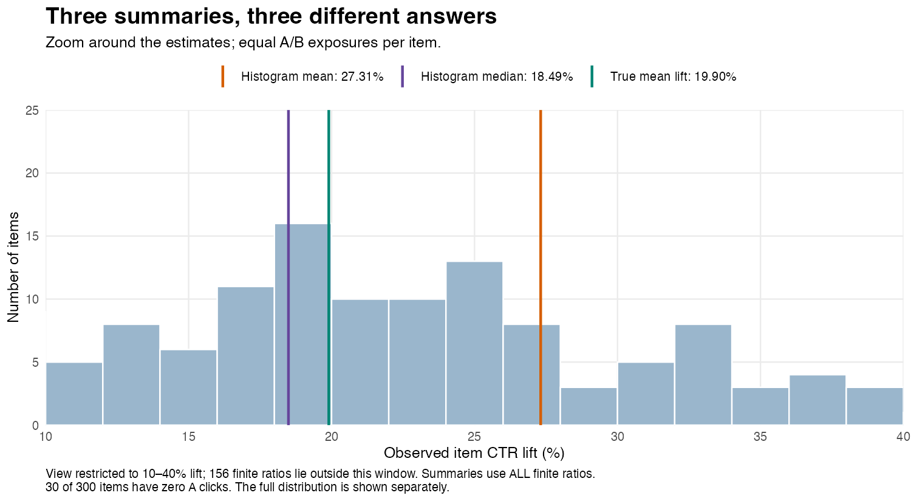
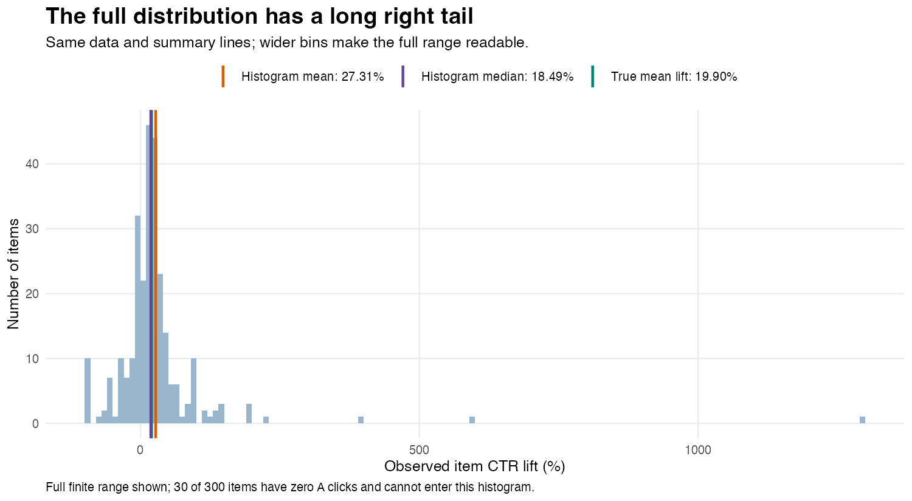
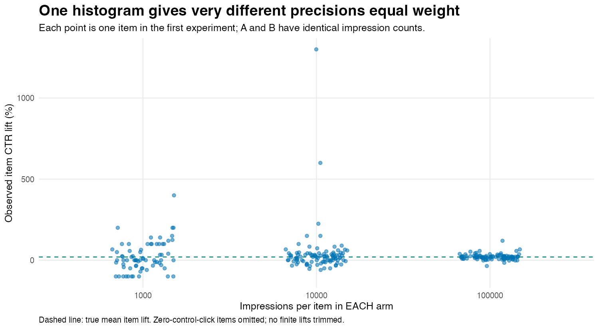
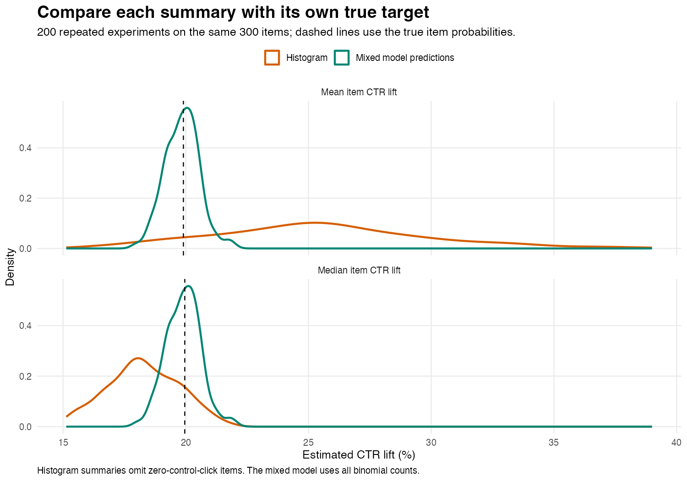

flowchart TD
request["Impression requested for an item"] --> randomize{"Randomly assign variant"}
randomize -->|50%| a["Select thumbnail A"]
randomize -->|50%| b["Select thumbnail B"]
a --> impression["Display and record impression"]
b --> impression
impression --> outcome["Record whether the user clicks"]
outcome --> aggregate["Aggregate clicks and impressions by item and variant"]
aggregate --> report["Report CTR = clicks / impressions"]
A very common experiment in online commerce consists in trying different variants for an impressed item—say, different thumbnails showing an item for sale. The traditional way of running this experiment consists in randomly selecting the variant that’s shown to the user when the item’s impression is requested, and record whether the user clicked on it:
You’d like to know if variant B outperforms variant A and by how much. Every item has an equal probability of showing A or B, and number of impressions (say, at least 1000 per arm) isn’t an issue, so you have an estimate of the click-through rate CTR for each variant. It’s very tempting to plot a histogram of the relative lift
\[ \widehat L_i = \frac{\widehat{\mathrm{CTR}}_{Bi}}{\widehat{\mathrm{CTR}}_{Ai}}-1, \]
and use the empirical mean and standard deviation of \(\widehat L_i\) to report the estimated effect and its uncertainty. And I’ve seen this happen.
There are at least two problems with this approach:
- the observed lifts have different precisions, depending on both impression counts and baseline click probabilities; their empirical standard deviation describes the spread across items, not the standard error of the mean
- this doesn’t address the possibility that the click counts on A are zero
Let’s run a simulation to see if I’m just blowing things out of proportion or if this is a serious concern.
The flowchart uses independent 50/50 assignment; the simulation below fixes equal counts per arm to isolate the problem from random allocation imbalance.
A constant effect
We simulate 300 items; 100 of them receive 1,000 impressions per arm, 100 receive 10,000, and 100 receive 100,000. This is important because the distribution of \(\widehat L_i\) will depend on the distribution of each arm’s CTR, which is a binomial distribution divided by a constant and so will depend on the number of impressions.
We’ll also assume a different baseline click probability for each item, modeled with a normally distributed random effect.
Baseline click probabilities vary between items. We generate them with a random-intercept logistic model:
\[ Y_{it}\sim\operatorname{Binomial}(n_i,p_{it}), \qquad \operatorname{logit}(p_{it})=\alpha+u_i+\beta t, \qquad u_i\sim N(0,1.2^2), \]
where \(t=0\) for A and \(t=1\) for B, \(\alpha=\operatorname{logit}(0.002)\), and \(\beta=\log(1.2)\). Item intercepts are independent of impression counts. Click counts are independent conditional on the item intercepts.
B multiplies every item’s odds of a click by exactly 1.2. The effect is constant on the log-odds scale, matching the model we will fit.
By the way, a 20% odds increase is not exactly a 20% CTR increase. If \(r=\exp(\beta)\), an item’s true relative CTR lift is
\[ L_i=\frac{r}{1+(r-1)p_{Ai}}-1. \]
It depends on baseline CTR. In these simulated items, true mean CTR lift is 19.90% and true median CTR lift is 19.96%. We use those exact probability-based targets when judging the histogram, rather than treating odds lift and CTR lift as interchangeable.
What the histogram says

The plot zooms in around the three summaries; values outside the window still contribute to the calculations.
Show the full distribution, including extreme lifts

In the first experiment, the histogram mean is 27.31%, while its median is 18.49%. The mixed model’s predicted mean CTR lift is 20.38%.
There are also 30 items missing from that histogram because A recorded no clicks. Twelve have no clicks in either arm, producing \(0/0\); the other eighteen have positive B clicks and an infinite observed ratio. We explicitly omit these items from the histogram and report how many. We retain all of them when fitting the model. No finite ratios are trimmed, and no pseudocounts are added.
Three issues are entangled here:
- The denominator is noisy. A downward fluctuation in A’s observed CTR can produce a very large ratio. An upward fluctuation does not produce a symmetric movement in the opposite direction. The numerator being unbiased does not make the ratio unbiased.
- Each bar gives items equal representation despite unequal precision. A ratio based on a few clicks has the same vote in the histogram mean as one based on thousands.
- Omitting zero denominators selects on the observed outcome. It changes which items enter the summary. Adding an arbitrary pseudocount would define a different estimator, not eliminate the need to examine its behaviour.
The median is less sensitive to extreme ratios, but it is still the median of noisy, discrete measurements in a selected sample. There is no general identity equating that median with the median of the underlying effects. The directions of the distortions here are simulation results, not universal rules.
To see how precision varies, separate the same experiment’s observed lifts by impression count. Each dot below represents one item with at least one A click. Its height is its observed relative lift; the small horizontal offsets simply keep dots from overlapping. The dashed line marks the true mean item lift, about 19.90%.

The items with 100,000 impressions per arm cluster much more tightly around the true mean than those with less traffic. Yet the largest outlier is in the 10,000-impression group: impression count alone does not determine precision, because an item with a low baseline CTR can still receive very few clicks. A large observed lift can therefore reflect an unusually small denominator rather than an unusually strong treatment effect. The histogram gives each of these noisy ratios the same weight as a much more precise one.
Fit the counts, with an intercept for each item
Instead of summarizing the ratios, a far better approach is to fit a binomial logistic regression with a shared treatment coefficient and an item-level random intercept:
library(lme4)
fit <- glmer(
cbind(clicks, impressions - clicks) ~ arm + (1 | item),
data = experiment,
family = binomial,
nAGQ = 9
)There are two rows per item, one per arm, with arm coded 0 for A and 1 for B. The response supplies both clicks and non-clicks. The item intercept represents baseline propensity; the arm coefficient estimates the common conditional log-odds effect. Those kinds of models are what lme4::glmer was designed for.
The binomial likelihood uses each row’s impression count. We do not give a noisy observed ratio the same status as a precise one, nor manually assign weights to ratios; their precision is implicitly taken into account from their impression count. Item intercepts are partially pooled through their shared normal distribution. Zero-click rows remain valid binomial observations.
To report CTR lift, predict each observed item’s probability under both arms, retaining its fitted random intercept:
\[ \widehat L_i^{\mathrm{model}} =\frac{\operatorname{logit}^{-1}(\widehat\alpha+\widehat u_i+\widehat\beta)} {\operatorname{logit}^{-1}(\widehat\alpha+\widehat u_i)}-1. \]
Then take the mean or median of those predicted lifts, depending on the question. These are plug-in summaries for the observed items, not predictions for a new population of items. Reporting \(\exp(\widehat\beta)-1\) directly would instead report the proportional change in odds.
Repeat the experiment
We hold the 300 items, their probabilities, and their impression counts fixed, then redraw clicks and refit the model 200 times.
Each repetition now contributes one estimated mean and one estimated median for each method. The curves below show the distributions of those estimates across experiments, rather than the distribution of individual item lifts. Orange represents summaries of the observed lift histogram; green represents summaries of the mixed model’s predicted lifts. The upper panel compares mean estimates and the lower panel compares median estimates, each against its own true target, marked by a dashed line.

The orange mean estimates sit mostly to the right of their target, while the orange median estimates sit mostly to the left. The discrepancy in the first experiment was therefore not just an unlucky draw: these summaries systematically overestimate or underestimate their respective targets in this simulation. The green curves are both closer to their targets and narrower, showing that the model reduces both bias and variability across repeated experiments. These are sampling distributions, not confidence intervals from a single experiment; their widths show how much the estimates change when we redraw the clicks.
| Summary | True target | Average estimate across 200 experiments |
|---|---|---|
| Histogram mean | 19.90% mean item lift | 25.49% |
| Model-predicted mean | 19.90% mean item lift | 19.84% |
| Histogram median | 19.96% median item lift | 18.28% |
| Model-predicted median | 19.96% median item lift | 19.90% |
All 200 fits passed the script’s convergence and non-singularity checks. The mean estimated log-odds effect was 0.18182, versus the true 0.18232. Approximate 95% Wald intervals for that coefficient covered it in 96.5% of these repetitions. That coverage calculation concerns the log-odds coefficient, not the derived CTR summaries.
What to report
Use the binomial counts and model item baselines when estimating the shared conditional algorithm effect. A histogram of observed ratios is an exploratory plot, not a substitute for that analysis. A logistic model with item random effects does this well in our example.
It would be too strong to claim that this is the only way to estimate an effect. For example, with the identical exposure mixes used here, the pooled CTR ratio estimates an impression-level relative effect: its true target is 19.66%, and its average estimate is 19.60%. That is a different target from mean item lift, but it is a legitimate one. Item fixed-effect or conditional logistic approaches can also address a common conditional odds effect under suitable assumptions.
The mixed model succeeds here under a data-generating process that matches its assumptions. A random intercept does not fix audience confounding, dependence from repeated users, or an incorrect assumption of a shared treatment effect. If the treatment effect itself varies between items, random slopes may be needed. If a constant relative CTR lift is the scientific assumption, a constant logistic coefficient is not that assumption.
Reproduce the simulation
Download the simulation script and run it from the folder where you saved it:
Rscript ctr-exposure-simulation.RThe script requires ggplot2 and lme4. It checks that both are available and stops with an explicit error naming any missing packages; it does not install anything. Results are written to a ctr-simulation-output folder in your current working directory. To choose another output folder, pass its path as the first argument:
Rscript ctr-exposure-simulation.R my-resultsThe seed is 20261010. Outputs include all four graphs, each repetition and its model diagnostics, summary results, the first experiment’s item counts and true probabilities, the first fitted model, and R session information. Repetition one supplies the example histogram; it was not selected from the repetitions for an especially large discrepancy.